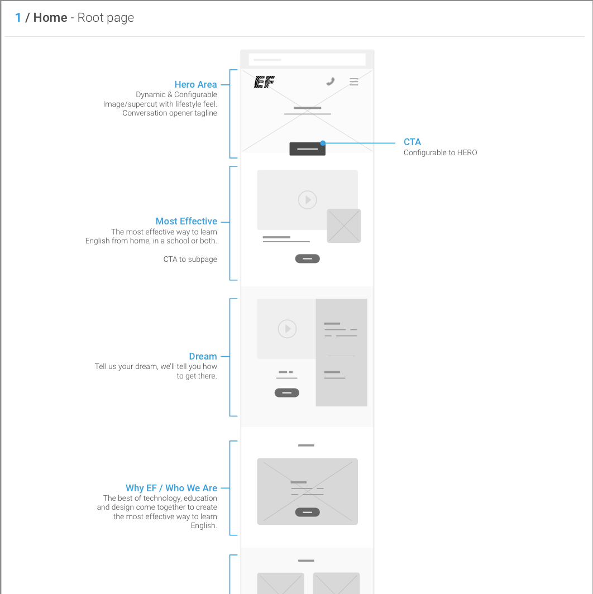

The Challenge
With a huge pivot on the product side underway, a new landing page to tell the story was next. Changing a strategy from in-your-face lead forms to telling a story, sharing an experience, showing a product. All controllable via CMA by content creators in four markets of varied audience, goals and alphabets.
The Process
Mobile First? How about mobile only? Yes we did get to Desktop designs, all the while being mindful to not design ourselves into a corner; however, data up to this point was practically screaming to us that users overwhelmingly interact with our landing and product pages on mobile devices.
but even before any of this? How do our target audience react to our messaging? - Let's test it. What about Imagery? Well we have some ideas.. no. Let's test it.
Insight gained from running new messaging on the current site, and conducting quick sanity-checks on new directions we were coming up with spoke to the old addage: "measure twice, cut once."